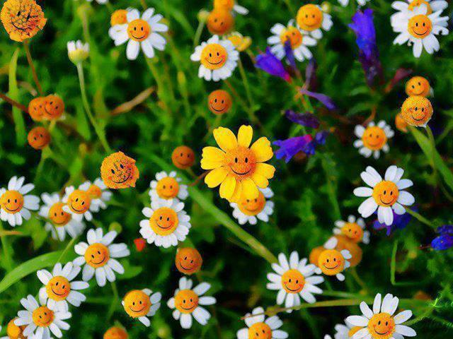

Zodiac floral
Zodiacul floral include 9 zodii si este foarte interesant, pentru ca ascunde detalii picante despre personalitatea ta. In principiu, zodiacul floral este caracteristic femeilor, dar prin extensie, si bărbații se pot regăsi in descrierile de aici. Caracteristicile zodiacale ale florilor se obțin pe baza zilei de nastere. Pentru a afla ce floare te reprezinta, nu trebuie sa faci un calcul dificil, ci doar sa te uiti unde este incadrata ziua ta de nastere aici